1. Install the actuator to the housing.
Note
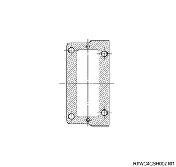
Note
Tightening torque： 9 N・m { 0.9 kgf・m / 80 lb・in }
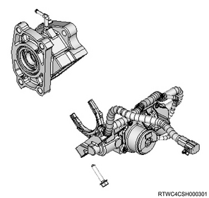
1. Install the front drive axle assembly to vehicle.
Note
Caution
Note
Tightening torque： 169 N・m { 17.2 kgf・m / 125 lb・ft } Axle case bracket left and right side
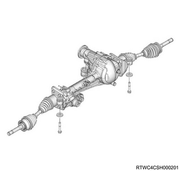
1. Install the suspension cross member assembly to the frame.
Note
Tightening torque： 167 N・m { 17.0 kgf・m / 123 lb・ft }
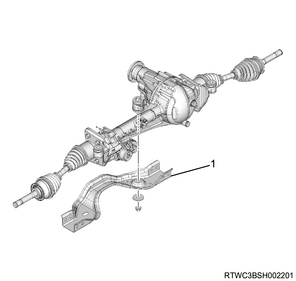
1. Install the knuckle to the upper control arm.
Note
Tightening torque： 98 N・m { 10.0 kgf・m / 72 lb・ft }
Caution
1. Connect the lower control arm to the suspension cross member assembly.
Caution
Note
Caution
Buffer clearance： 26.0 mm { 1.02 in }
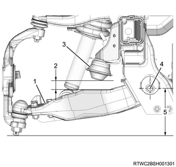
1. Connect the breather hose to the front axle assembly.
1. Connect the tie rod end to the knuckle.
Tightening torque： 98 N・m { 10.0 kgf・m / 72 lb・ft }
1. Connect the shock absorber to the lower control arm.
Caution
Note
Tightening torque： 152 N・m { 15.5 kgf・m / 112 lb・ft }
1. Connect the stabilizer link to the lower control arm.
Note
Tightening torque： 64 N・m { 6.5 kgf・m / 47 lb・ft }
1. Fill the grease in the front hub rotor assembly.
Note
Amount of filling： 35 g { 1.23 oz } Hub
Application quantity： 15 g { 0.53 oz } Inner bearing
Application quantity： 10 g { 0.35 oz } Outer bearing
2. Install the front hub rotor assembly to the knuckle.
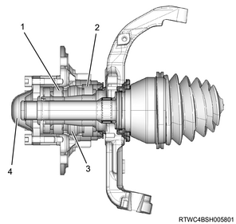
1. Install the bearing lock nut to the knuckle using special tool.
Note
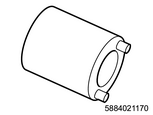
SST: 5-8840-2117-0 - hub nut wrench
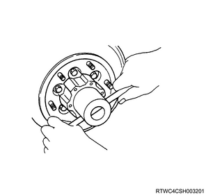
1. Adjust the preload to a standard value.
Note
Tightening torque： 29 N・m { 3.0 kgf・m / 21 lb・ft }
Note
Preload： 20.0 to 25.0 N { 2.0 to 2.5 kg / 4.5 to 5.6 lb } New bearing, new oil seal
Preload： 12.0 to 18.0 N { 1.2 to 1.8 kg / 2.7 to 4.0 lb } Reused bearing, new oil seal
Note
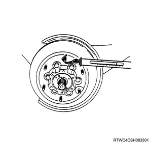
1. Install the lock washer to the bearing lock nut.
Note
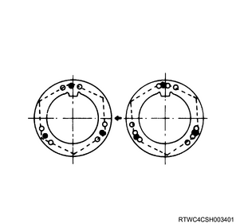
1. Install the flange to the front hub.
Note
2. Adjust the shim.
Note
Standard： 0.0 to 0.2 mm { 0.000 to 0.008 in }
| Types of adjust shims |
| ： 0.2 mm { 0.008 in } |
| ： 0.3 mm { 0.012 in } |
| ： 0.5 mm { 0.020 in } |
| ： 1.0 mm { 0.039 in } |
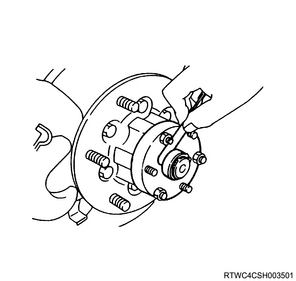
1. Install the hub cap to the front hub.
Note
Tightening torque： 59 N・m { 6.0 kgf・m / 44 lb・ft }
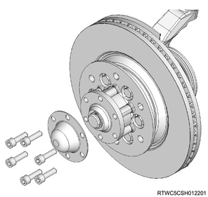
Note
Caution
Note
1. Install the wheel speed sensor to the knuckle.
Caution
Note
Tightening torque： 8 N・m { 0.8 kgf・m / 71 lb・in }
2. Connect the harness clip to the harness.
Note
Tightening torque： 8 N・m { 0.8 kgf・m / 71 lb・in }
Note
Tightening torque： 20 N・m { 2.0 kgf・m / 15 lb・ft }
Note
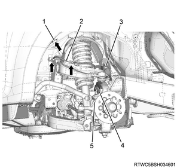
Caution
1. Connect the harness connector to the wheel speed sensor.
1. Install the brake caliper assembly to the knuckle.
Note
Tightening torque： 206 to 246 N・m { 21.0 to 25.1 kgf・m / 152 to 181 lb・ft }
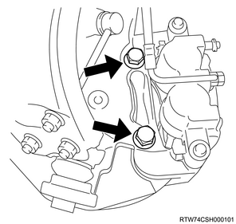
Note
Caution
Note
1. Install the disc wheel to vehicle.
Note
Tightening torque： 118 N・m { 12.0 kgf・m / 87 lb・ft }
2. Lower vehicle.
Note
| Trim height： 140 mm { 5.51 in } | |
| Buffer clearance： 26 mm { 1.02 in } |
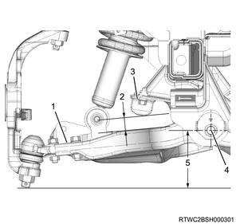
1. Securely tighten the lower control arm to the suspension cross member assembly.
Caution
Tightening torque： 186 N・m { 19.0 kgf・m / 137 lb・ft }